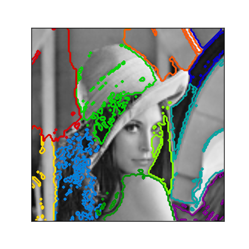

Segmenting the picture of Lena in regions¶
This example uses Spectral clustering on a graph created from voxel-to-voxel difference on an image to break this image into multiple partly-homogenous regions.
This procedure (spectral clustering on an image) is an efficient approximate solution for finding normalized graph cuts.
Python source code: plot_lena_segmentation.py
print __doc__
# Author: Gael Varoquaux <gael.varoquaux@normalesup.org>
# License: BSD
import numpy as np
import scipy as sp
import pylab as pl
from sklearn.feature_extraction import image
from sklearn.cluster import spectral_clustering
lena = sp.misc.lena()
# Downsample the image by a factor of 4
lena = lena[::2, ::2] + lena[1::2, ::2] + lena[::2, 1::2] + lena[1::2, 1::2]
lena = lena[::2, ::2] + lena[1::2, ::2] + lena[::2, 1::2] + lena[1::2, 1::2]
# Convert the image into a graph with the value of the gradient on the
# edges.
graph = image.img_to_graph(lena)
# Take a decreasing function of the gradient: an exponential
# The smaller beta is, the more independant the segmentation is of the
# actual image. For beta=1, the segmentation is close to a voronoi
beta = 5
eps = 1e-6
graph.data = np.exp(-beta * graph.data / lena.std()) + eps
# Apply spectral clustering (this step goes much faster if you have pyamg
# installed)
N_REGIONS = 11
labels = spectral_clustering(graph, k=N_REGIONS)
labels = labels.reshape(lena.shape)
###############################################################################
# Visualize the resulting regions
pl.figure(figsize=(5, 5))
pl.imshow(lena, cmap=pl.cm.gray)
for l in range(N_REGIONS):
pl.contour(labels == l, contours=1,
colors=[pl.cm.spectral(l / float(N_REGIONS)), ])
pl.xticks(())
pl.yticks(())
pl.show()